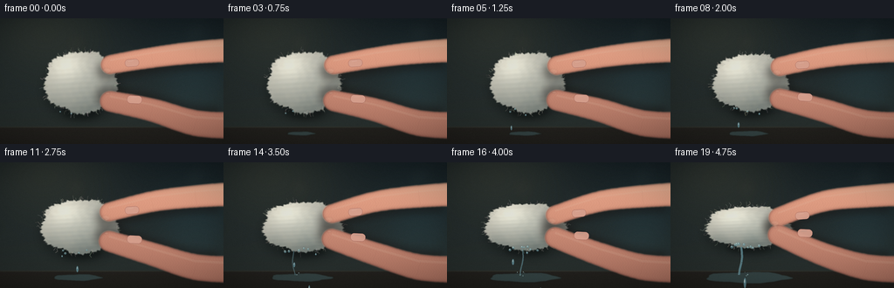
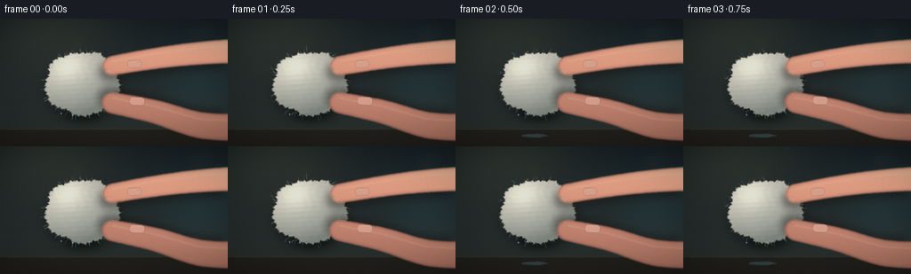

CODING AGENTS AS PIXEL WORLD MODELS
traex/DeepSeek-V4.1-Flash · mechanics_0016
点击播放 · 原生 RGB 像素
逐轮保存的候选
回放视频、检查图与代码变化。
每份候选均可单独播放。实际图片检查记录在下方工具轨迹中。
候选 01播放与检查图
点击播放 · 原生 RGB 像素


展开代码变化
--- 上一保存版本
+++ 本次保存版本
@@ -0,0 +1,587 @@
+from __future__ import annotations
+
+import math
+from pathlib import Path
+
+import numpy as np
+from PIL import Image, ImageDraw, ImageFilter
+
+import artifact_io
+
+
+W, H = 256, 144
+N_FRAMES = 20
+FPS = 4
+SS = 4
+RW, RH = W * SS, H * SS
+CASE_DIR = Path(__file__).resolve().parent
+
+
+def clamp01(value: float) -> float:
+ return max(0.0, min(1.0, value))
+
+
+def smoothstep(edge0: float, edge1: float, x):
+ t = np.clip((x - edge0) / (edge1 - edge0), 0.0, 1.0)
+ return t * t * (3.0 - 2.0 * t)
+
+
+def rgba_array(image: Image.Image) -> np.ndarray:
+ return np.asarray(image, dtype=np.float32) / 255.0
+
+
+def image_array(image: Image.Image) -> np.ndarray:
+ return np.asarray(image, dtype=np.float32) / 255.0
+
+
+def composite(base: Image.Image, layer: Image.Image) -> Image.Image:
+ return Image.alpha_composite(base.convert("RGBA"), layer.convert("RGBA"))
+
+
+def blurred_ellipse(
+ draw_size: tuple[int, int],
+ box: tuple[float, float, float, float],
+ fill: tuple[int, int, int, int],
+ blur: float,
+) -> Image.Image:
+ layer = Image.new("RGBA", draw_size, (0, 0, 0, 0))
+ ImageDraw.Draw(layer).ellipse(box, fill=fill)
+ return layer.filter(ImageFilter.GaussianBlur(blur * SS))
+
+
+def make_background(frame_index: int) -> Image.Image:
+ yy, xx = np.mgrid[0:RH, 0:RW].astype(np.float32)
+ xn = xx / RW
+ yn = yy / RH
+
+ top = np.array([24.0, 34.0, 37.0], dtype=np.float32)
+ bottom = np.array([45.0, 52.0, 49.0], dtype=np.float32)
+ color = top[None, None, :] * (1.0 - yn[:, :, None]) + bottom[None, None, :] * yn[:, :, None]
+
+ # A broad, soft key light from the upper left.
+ glow = np.exp(-(((xn - 0.20) / 0.46) ** 2 + ((yn - 0.05) / 0.52) ** 2) * 2.0)
+ color += glow[:, :, None] * np.array([22.0, 19.0, 12.0], dtype=np.float32)
+
+ # Very restrained cool bounce on the right side.
+ bounce = np.exp(-(((xn - 0.88) / 0.25) ** 2 + ((yn - 0.55) / 0.55) ** 2) * 2.0)
+ color += bounce[:, :, None] * np.array([4.0, 12.0, 13.0], dtype=np.float32)
+
+ # Counter plane and its gently lit front edge.
+ counter = smoothstep(0.855, 0.875, yn)
+ counter_color = np.array([49.0, 47.0, 42.0], dtype=np.float32)
+ counter_color = counter_color[None, None, :] * (1.05 - 0.35 * yn[:, :, None])
+ color = color * (1.0 - counter[:, :, None]) + counter_color * counter[:, :, None]
+ edge_glint = np.exp(-((yn - 0.865) / 0.0045) ** 2) * np.exp(-((xn - 0.33) / 0.48) ** 2)
+ color += edge_glint[:, :, None] * np.array([14.0, 12.0, 8.0], dtype=np.float32)
+
+ # Sparse out-of-focus bokeh, shifted subtly like a handheld macro shot.
+ bg = Image.fromarray(np.clip(color, 0, 255).astype(np.uint8), "RGB").convert("RGBA")
+ bokeh = Image.new("RGBA", (RW, RH), (0, 0, 0, 0))
+ bd = ImageDraw.Draw(bokeh)
+ rng = np.random.default_rng(41)
+ for _ in range(14):
+ bx = float(rng.uniform(0.03, 0.98) * RW)
+ by = float(rng.uniform(0.02, 0.75) * RH)
+ br = float(rng.uniform(0.012, 0.052) * RW)
+ alpha = int(rng.uniform(8, 22))
+ tint = (142, 163, 154) if rng.random() < 0.7 else (175, 143, 104)
+ bd.ellipse((bx - br, by - br, bx + br, by + br), fill=(*tint, alpha))
+ bokeh = bokeh.filter(ImageFilter.GaussianBlur(8.0 * SS))
+ bg = Image.alpha_composite(bg, bokeh)
+
+ # Fine, static grain is enough at this scale and avoids a synthetic gradient.
+ rng = np.random.default_rng(1907 + frame_index // 5)
+ grain = rng.normal(0.0, 2.0, (RH, RW, 1)).astype(np.float32)
+ arr = image_array(bg)
+ arr[:, :, :3] += grain / 255.0
+ return Image.fromarray(np.clip(arr * 255.0, 0, 255).astype(np.uint8), "RGBA")
+
+
+def cotton_silhouette(
+ cx: float,
+ cy: float,
+ rx: float,
+ ry: float,
+ squeeze: float,
+) -> tuple[np.ndarray, np.ndarray, np.ndarray]:
+ yy, xx = np.mgrid[0:RH, 0:RW].astype(np.float32)
+ dx = (xx - cx * SS) / (rx * SS)
+ dy = (yy - cy * SS) / (ry * SS)
+ rr = np.sqrt(dx * dx + dy * dy)
+ angle = np.arctan2(dy, dx)
+
+ # Broad lobes and fine fuzz break the ellipsoid without changing its mass.
+ lobe = (
+ 0.042 * np.sin(5.0 * angle + 0.8)
+ + 0.024 * np.sin(9.0 * angle - 1.2)
+ + 0.013 * np.sin(17.0 * angle + 2.1)
+ )
+ fuzz = (
+ 0.018 * np.sin(39.0 * angle + 6.0 * rr)
+ + 0.010 * np.sin(71.0 * angle - 3.0 * rr)
+ )
+ radius = rr / (1.0 + lobe + fuzz)
+ alpha = 1.0 - smoothstep(0.955, 1.018, radius)
+
+ # Wet cotton becomes slightly darker and more translucent near its lower edge.
+ wet = smoothstep(-0.15, 0.85, dy) * (0.25 + 0.75 * squeeze)
+ alpha *= 0.985 - 0.055 * wet
+ return alpha, dx, dy
+
+
+def make_cotton(
+ frame_index: int,
+ cx: float,
+ cy: float,
+ rx: float,
+ ry: float,
+ squeeze: float,
+) -> tuple[Image.Image, tuple[float, float, float, float]]:
+ alpha, dx, dy = cotton_silhouette(cx, cy, rx, ry, squeeze)
+ rr = np.sqrt(dx * dx + dy * dy)
+ nz = np.sqrt(np.clip(1.0 - rr * rr, 0.0, 1.0))
+
+ # Cotton fibers create a low-contrast normal perturbation.
+ fiber_noise = (
+ np.sin(dx * 28.0 + np.sin(dy * 8.0) * 2.0)
+ + 0.62 * np.sin(dy * 37.0 + np.cos(dx * 7.0) * 1.8)
+ + 0.38 * np.sin((dx + dy) * 61.0)
+ ) / 2.0
+ nx = dx * 0.70 + fiber_noise * 0.035
+ ny = dy * 0.70 + np.sin(dy * 41.0 + dx * 3.0) * 0.028
+ nz2 = np.sqrt(np.clip(1.0 - nx * nx - ny * ny, 0.02, 1.0))
+
+ light = np.array([-0.46, -0.66, 0.60], dtype=np.float32)
+ light /= np.linalg.norm(light)
+ ndl = np.clip(nx * light[0] + ny * light[1] + nz2 * light[2], 0.0, 1.0)
+ half = light + np.array([0.0, 0.0, 1.0], dtype=np.float32)
+ half /= np.linalg.norm(half)
+ spec = np.clip(nx * half[0] + ny * half[1] + nz2 * half[2], 0.0, 1.0) ** 18.0
+
+ base = np.empty((RH, RW, 3), dtype=np.float32)
+ shadow = np.array([101.0, 111.0, 107.0], dtype=np.float32)
+ mid = np.array([220.0, 217.0, 201.0], dtype=np.float32)
+ light_col = np.array([253.0, 247.0, 224.0], dtype=np.float32)
+ warm = np.array([246.0, 226.0, 190.0], dtype=np.float32)
+
+ diffuse = (0.32 + 0.68 * ndl)[:, :, None]
+ base[:] = shadow[None, None, :] * (1.0 - diffuse) + mid[None, None, :] * diffuse
+ rim = np.clip((-dx * 0.42 - dy * 0.25 + 0.48), 0.0, 1.0)
+ base += (rim * 11.0 + spec * 42.0)[:, :, None] * (light_col / 255.0)
+
+ # Subtle warm variation, then damp patches.
+ mottling = (0.5 + 0.5 * np.sin(dx * 13.0 + dy * 17.0)) * (0.5 + 0.5 * np.sin(dx * 29.0 - dy * 11.0))
+ base = base * (1.0 - 0.045 * mottling[:, :, None]) + warm[None, None, :] * 0.045 * mottling[:, :, None]
+ damp = smoothstep(0.2, 1.05, dy + 0.20 * np.sin(dx * 8.0 + 0.8))
+ damp *= 0.20 + 0.48 * squeeze
+ base *= 1.0 - 0.16 * damp[:, :, None]
+ base += np.array([0.0, 8.0, 10.0], dtype=np.float32)[None, None, :] * damp[:, :, None]
+
+ # Water film highlights on the upper surface and concentrated beads below.
+ film = np.clip((nz - 0.58) / 0.42, 0.0, 1.0) * (0.32 + 0.50 * squeeze)
+ base += film[:, :, None] * np.array([10.0, 13.0, 13.0], dtype=np.float32)[None, None, :]
+
+ rgba = np.dstack([np.clip(base, 0, 255), np.clip(alpha, 0, 1) * 255.0]).astype(np.uint8)
+ cotton = Image.fromarray(rgba, "RGBA")
+
+ # Draw a few loose fibers beyond the silhouette, then blend them back under a fuzz mask.
+ fibers = Image.new("RGBA", (RW, RH), (0, 0, 0, 0))
+ fd = ImageDraw.Draw(fibers)
+ rng = np.random.default_rng(771 + frame_index)
+ for _ in range(84):
+ theta = float(rng.uniform(0.0, 2.0 * math.pi))
+ start_scale = float(rng.uniform(0.90, 1.00))
+ start = (
+ (cx + math.cos(theta) * rx * start_scale) * SS,
+ (cy + math.sin(theta) * ry * start_scale) * SS,
+ )
+ length = float(rng.uniform(1.4, 7.0)) * SS
+ bend = float(rng.uniform(-1.0, 1.0)) * 2.8 * SS
+ end = (
+ start[0] + math.cos(theta) * length - math.sin(theta) * bend,
+ start[1] + math.sin(theta) * length + math.cos(theta) * bend,
+ )
+ mid = ((start[0] + end[0]) * 0.5 - math.sin(theta) * bend, (start[1] + end[1]) * 0.5 + math.cos(theta) * bend)
+ color = (int(rng.uniform(205, 246)), int(rng.uniform(202, 239)), int(rng.uniform(186, 221)), int(rng.uniform(45, 92)))
+ fd.line([start, mid, end], fill=color, width=max(1, int(round(rng.uniform(0.45, 1.05) * SS))))
+ cotton = composite(cotton, fibers.filter(ImageFilter.GaussianBlur(0.22 * SS)))
+ bbox = (
+ int((cx - rx - 12) * SS),
+ int((cy - ry - 12) * SS),
+ int((cx + rx + 12) * SS),
+ int((cy + ry + 12) * SS),
+ )
+ return cotton, bbox
+
+
+def finger_mask(path: list[tuple[float, float]], widths: list[float]) -> Image.Image:
+ mask = Image.new("L", (RW, RH), 0)
+ draw = ImageDraw.Draw(mask)
+ samples = []
+ # Catmull-Rom style interpolation through four control points.
+ for segment in range(len(path) - 1):
+ p0 = path[max(0, segment - 1)]
+ p1 = path[segment]
+ p2 = path[segment + 1]
+ p3 = path[min(len(path) - 1, segment + 2)]
+ for step in range(22):
+ t = step / 22.0
+ t2, t3 = t * t, t * t * t
+ x = 0.5 * ((2.0 * p1[0]) + (-p0[0] + p2[0]) * t + (2.0 * p0[0] - 5.0 * p1[0] + 4.0 * p2[0] - p3[0]) * t2 + (-p0[0] + 3.0 * p1[0] - 3.0 * p2[0] + p3[0]) * t3)
+ y = 0.5 * ((2.0 * p1[1]) + (-p0[1] + p2[1]) * t + (2.0 * p0[1] - 5.0 * p1[1] + 4.0 * p2[1] - p3[1]) * t2 + (-p0[1] + 3.0 * p1[1] - 3.0 * p2[1] + p3[1]) * t3)
+ width = widths[segment] * (1.0 - t) + widths[segment + 1] * t
+ samples.append((x, y, width))
+ samples.append((path[-1][0], path[-1][1], widths[-1]))
+
+ for x, y, width in samples:
+ radius = width * 0.5 * SS
+ draw.ellipse((x * SS - radius, y * SS - radius, x * SS + radius, y * SS + radius), fill=255)
+ return mask
+
+
+def make_finger(
+ path: list[tuple[float, float]],
+ widths: list[float],
+ nail: tuple[float, float, float, float, float] | None,
+ shadow_offset: tuple[float, float] = (0.0, 0.0),
+ warm_shift: float = 0.0,
+) -> tuple[Image.Image, Image.Image]:
+ mask = finger_mask(path, widths)
+ soft = mask.filter(ImageFilter.GaussianBlur(0.7 * SS))
+ yy, xx = np.mgrid[0:RH, 0:RW].astype(np.float32)
+ xn = xx / RW
+ yn = yy / RH
+
+ # Cylindrical shading plus a top-left key light.
+ gradient = np.clip(0.20 + 0.80 * (1.0 - yn * 0.55 + (xn - 0.5) * 0.12), 0.0, 1.0)
+ skin_dark = np.array([137.0, 77.0, 67.0], dtype=np.float32)
+ skin_mid = np.array([207.0, 137.0, 112.0], dtype=np.float32)
+ skin_light = np.array([248.0, 197.0, 166.0], dtype=np.float32)
+ color = skin_dark[None, None, :] * (1.0 - gradient[:, :, None]) + skin_mid[None, None, :] * gradient[:, :, None]
+ color += skin_light[None, None, :] * (gradient[:, :, None] ** 3.2) * 0.33
+ color += np.array([warm_shift, warm_shift * 0.5, 0.0], dtype=np.float32)[None, None, :]
+
+ # Fingerprint-like texture and subtle pores, strongest in the midtone.
+ ridge = 0.5 + 0.5 * np.sin(xx * 0.52 + np.sin(yy * 0.16) * 3.2)
+ pores = 0.5 + 0.5 * np.sin(xx * 1.31 + yy * 0.73)
+ color *= 1.0 - 0.018 * ridge[:, :, None] - 0.012 * pores[:, :, None]
+
+ m = np.asarray(soft, dtype=np.float32)[:, :, None] / 255.0
+ color = np.dstack([np.clip(color, 0, 255), np.clip(m, 0, 1) * 255.0]).astype(np.uint8)
+ finger = Image.fromarray(color, "RGBA")
+
+ # Edge shadow gives the finger a rounded, dimensional silhouette.
+ inner = np.asarray(mask.filter(ImageFilter.GaussianBlur(2.1 * SS)), dtype=np.float32) / 255.0
+ outer = np.asarray(mask.filter(ImageFilter.GaussianBlur(0.25 * SS)), dtype=np.float32) / 255.0
+ edge = np.clip(outer - inner, 0.0, 1.0)
+ edge_layer = np.zeros((RH, RW, 4), dtype=np.uint8)
+ edge_layer[:, :, :3] = np.array([91, 43, 40], dtype=np.uint8)
+ edge_layer[:, :, 3] = np.clip(edge * 155.0, 0, 255).astype(np.uint8)
+ finger = Image.alpha_composite(finger, Image.fromarray(edge_layer, "RGBA"))
+
+ # Broad specular band along the upper surface.
+ highlight = Image.new("RGBA", (RW, RH), (0, 0, 0, 0))
+ hd = ImageDraw.Draw(highlight)
+ for i in range(len(path) - 1):
+ x1, y1 = path[i]
+ x2, y2 = path[i + 1]
+ hd.line(
+ [(x1 * SS, (y1 - widths[i] * 0.23) * SS), (x2 * SS, (y2 - widths[i + 1] * 0.23) * SS)],
+ fill=(255, 220, 192, 30),
+ width=max(2, int(widths[i] * 0.10 * SS)),
+ )
+ highlight = Image.composite(highlight, Image.new("RGBA", (RW, RH), (0, 0, 0, 0)), mask.filter(ImageFilter.GaussianBlur(1.2 * SS)))
+ finger = Image.alpha_composite(finger, highlight)
+
+ # Knuckle creases and a small shadow at the root.
+ creases = Image.new("RGBA", (RW, RH), (0, 0, 0, 0))
+ cd = ImageDraw.Draw(creases)
+ for crease_t, strength in ((0.57, 34), (0.73, 22)):
+ idx = int((len(path) - 1) * crease_t)
+ x1, y1 = path[idx]
+ x2, y2 = path[idx + 1]
+ dx, dy = x2 - x1, y2 - y1
+ length = max(1.0, math.hypot(dx, dy))
+ nx, ny = -dy / length, dx / length
+ width = widths[idx]
+ cd.line(
+ [
+ ((x1 + nx * width * 0.25) * SS, (y1 + ny * width * 0.25) * SS),
+ ((x1 - nx * width * 0.38) * SS, (y1 - ny * width * 0.38) * SS),
+ ],
+ fill=(111, 57, 54, strength),
+ width=max(1, int(0.45 * SS)),
+ )
+ creases = Image.composite(creases, Image.new("RGBA", (RW, RH), (0, 0, 0, 0)), mask)
+ finger = Image.alpha_composite(finger, creases)
+
+ if nail is not None:
+ nx, ny, nw, nh, angle = nail
+ pad = int(10 * SS)
+ nail_img = Image.new("RGBA", (pad * 2, pad * 2), (0, 0, 0, 0))
+ nd = ImageDraw.Draw(nail_img)
+ nd.rounded_rectangle(
+ (pad - nw * SS * 0.5, pad - nh * SS * 0.5, pad + nw * SS * 0.5, pad + nh * SS * 0.5),
+ radius=nh * SS * 0.46,
+ fill=(236, 171, 151, 240),
+ outline=(145, 82, 78, 180),
+ width=max(1, int(0.35 * SS)),
+ )
+ nd.line(
+ [(pad - nw * SS * 0.24, pad - nh * SS * 0.22), (pad + nw * SS * 0.12, pad - nh * SS * 0.28)],
+ fill=(255, 222, 207, 165),
+ width=max(1, int(0.38 * SS)),
+ )
+ nail_img = nail_img.rotate(-angle, resample=Image.Resampling.BICUBIC, center=(pad, pad))
+ finger.alpha_composite(nail_img, (int(nx * SS) - pad, int(ny * SS) - pad))
+
+ shadow = Image.new("RGBA", (RW, RH), (0, 0, 0, 0))
+ if shadow_offset != (0.0, 0.0):
+ shifted = Image.new("L", (RW, RH), 0)
+ shifted.paste(mask, (int(shadow_offset[0] * SS), int(shadow_offset[1] * SS)))
+ shifted = shifted.filter(ImageFilter.GaussianBlur(4.0 * SS))
+ shadow_arr = np.zeros((RH, RW, 4), dtype=np.uint8)
+ shadow_arr[:, :, :3] = np.array([24, 18, 17], dtype=np.uint8)
+ shadow_arr[:, :, 3] = np.clip(np.asarray(shifted, dtype=np.float32) * 0.42, 0, 255).astype(np.uint8)
+ shadow = Image.fromarray(shadow_arr, "RGBA")
+ return finger, shadow
+
+
+def draw_puddle(squeeze: float, frame_index: int) -> Image.Image:
+ layer = Image.new("RGBA", (RW, RH), (0, 0, 0, 0))
+ if squeeze < 0.015:
+ return layer
+ rng = np.random.default_rng(320 + frame_index // 4)
+ cx, cy = 89.0, 132.0
+ rx = 15.0 + 34.0 * squeeze
+ ry = 2.2 + 4.4 * squeeze
+ points = []
+ for k in range(34):
+ theta = 2.0 * math.pi * k / 34.0
+ wobble = 1.0 + 0.07 * math.sin(5.0 * theta + 1.2) + float(rng.uniform(-0.035, 0.035))
+ points.append(((cx + math.cos(theta) * rx * wobble) * SS, (cy + math.sin(theta) * ry * wobble) * SS))
+ ImageDraw.Draw(layer).polygon(points, fill=(80, 120, 122, 105))
+ layer = layer.filter(ImageFilter.GaussianBlur(0.55 * SS))
+ highlight = Image.new("RGBA", (RW, RH), (0, 0, 0, 0))
+ hd = ImageDraw.Draw(highlight)
+ hd.arc(
+ ((cx - rx * 0.72) * SS, (cy - ry * 1.05) * SS, (cx + rx * 0.65) * SS, (cy + ry * 1.25) * SS),
+ 196,
+ 338,
+ fill=(196, 224, 218, 110),
+ width=max(1, int(0.45 * SS)),
+ )
+ highlight = highlight.filter(ImageFilter.GaussianBlur(0.3 * SS))
+ return Image.alpha_composite(layer, highlight)
+
+
+def droplet_layer(squeeze: float, frame_index: int, cotton_bottom: float) -> Image.Image:
+ layer = Image.new("RGBA", (RW, RH), (0, 0, 0, 0))
+ draw = ImageDraw.Draw(layer)
+ t = frame_index / FPS
+
+ # A thin pressure-driven stream appears late and thickens quickly.
+ stream = clamp01((squeeze - 0.40) / 0.60)
+ if stream > 0.0:
+ sx = 83.0 + 3.0 * math.sin(t * 5.1)
+ y0 = cotton_bottom - 1.0
+ y1 = 129.0
+ pts = []
+ for k in range(17):
+ u = k / 16.0
+ pts.append(
+ (
+ (sx + math.sin(u * 4.5 + t * 8.0) * (0.7 + 1.5 * u)) * SS,
+ (y0 + (y1 - y0) * u) * SS,
+ )
+ )
+ width = max(1, int((0.55 + 2.0 * stream) * SS))
+ draw.line(pts, fill=(105, 157, 161, int(90 + 95 * stream)), width=width)
+ draw.line([(x - 0.55 * SS, y) for x, y in pts], fill=(207, 233, 226, int(70 + 70 * stream)), width=max(1, int(0.32 * SS)))
+
+ # Beads collecting at the bottom of the cotton.
+ bead_count = int(2 + 7 * squeeze)
+ for k in range(bead_count):
+ bx = 69.0 + (k * 9.7 + 4.0 * math.sin(k * 2.3 + frame_index * 0.2)) % 35.0
+ by = cotton_bottom - 2.0 + 2.2 * math.sin(k * 1.7 + t * 2.0)
+ br = 0.65 + 1.15 * (0.35 + 0.65 * squeeze) * (0.7 + 0.3 * math.sin(k * 1.9))
+ draw.ellipse((bx * SS - br * SS, by * SS - br * SS, bx * SS + br * SS, by * SS + br * SS), fill=(116, 165, 166, 155))
+ draw.ellipse((bx * SS - br * SS * 0.58, by * SS - br * SS * 0.78, bx * SS + br * SS * 0.10, by * SS - br * SS * 0.12), fill=(228, 244, 235, 185))
+
+ # Deterministic droplets have short, readable fall arcs at 4 fps.
+ drops = [
+ (4, 72.0, 0.42, 1.2),
+ (5, 91.0, 0.55, 1.0),
+ (7, 78.0, 0.46, 1.4),
+ (8, 101.0, 0.58, 1.1),
+ (10, 87.0, 0.42, 1.5),
+ (11, 72.0, 0.52, 1.0),
+ (12, 96.0, 0.44, 1.35),
+ (13, 81.0, 0.48, 1.15),
+ (14, 105.0, 0.42, 1.0),
+ (15, 75.0, 0.52, 1.45),
+ (16, 92.0, 0.40, 1.2),
+ (17, 84.0, 0.46, 1.55),
+ ]
+ for spawn, start_x, duration, size in drops:
+ age_frames = frame_index - spawn
+ if age_frames < 0 or age_frames > 3:
+ continue
+ age = age_frames / FPS
+ y = cotton_bottom + 3.0 + 33.0 * (age / duration) ** 1.55
+ x = start_x + math.sin(age * 15.0 + spawn) * 0.8 + (age / duration) * 1.5
+ stretch = 1.0 + 2.4 * clamp01(age / duration)
+ radius = size * (0.9 + 0.22 * squeeze)
+ draw.ellipse(
+ (
+ (x - radius * 0.80) * SS,
+ (y - radius * stretch) * SS,
+ (x + radius * 0.80) * SS,
+ (y + radius * stretch) * SS,
+ ),
+ fill=(112, 164, 168, 190),
+ )
+ draw.ellipse(
+ (
+ (x - radius * 0.38) * SS,
+ (y - radius * stretch * 0.70) * SS,
+ (x + radius * 0.05) * SS,
+ (y - radius * stretch * 0.05) * SS,
+ ),
+ fill=(229, 245, 238, 220),
+ )
+
+ # Small splash flecks at the table when the pressure is high.
+ if squeeze > 0.55:
+ rng = np.random.default_rng(880 + frame_index)
+ for k in range(10):
+ phase = (frame_index + k * 0.63) % 4.0
+ if phase > 1.3:
+ continue
+ angle = float(rng.uniform(2.7, 6.1))
+ speed = float(rng.uniform(3.0, 10.0)) * (0.4 + squeeze)
+ x = 87.0 + math.cos(angle) * speed * phase
+ y = 130.0 + math.sin(angle) * speed * phase * 0.35 - 3.8 * phase + 2.0 * phase * phase
+ r = float(rng.uniform(0.25, 0.68))
+ draw.ellipse((x * SS - r * SS, y * SS - r * SS, x * SS + r * SS, y * SS + r * SS), fill=(177, 219, 214, 145))
+
+ return layer.filter(ImageFilter.GaussianBlur(0.10 * SS))
+
+
+def add_contact_shadow(scene: Image.Image, cx: float, cy: float, rx: float, ry: float, squeeze: float) -> Image.Image:
+ shadow = blurred_ellipse((RW, RH), ((cx - rx * 0.95) * SS, (cy - ry * 0.8) * SS, (cx + rx * 1.05) * SS, (cy + ry * 1.1) * SS), (11, 17, 17, 105), 6.0)
+ contact = blurred_ellipse((RW, RH), ((cx - rx * 0.48) * SS, (cy + ry * 0.58) * SS, (cx + rx * 0.55) * SS, (cy + ry * 1.04) * SS), (8, 11, 11, 110), 3.0)
+ scene = composite(scene, shadow)
+ scene = composite(scene, contact)
+ return scene
+
+
+def add_vignette_and_finish(scene: Image.Image, frame_index: int) -> Image.Image:
+ arr = image_array(scene)[:, :, :3]
+ yy, xx = np.mgrid[0:RH, 0:RW].astype(np.float32)
+ xn = (xx / RW - 0.5) / 0.5
+ yn = (yy / RH - 0.5) / 0.5
+ vignette = np.clip(1.0 - 0.20 * (xn * xn * 0.62 + yn * yn * 0.82) ** 1.15, 0.72, 1.0)
+ arr *= vignette[:, :, None]
+
+ # Gentle highlight roll-off and tiny sensor grain.
+ arr = arr / (1.0 + arr * 0.10)
+ rng = np.random.default_rng(401 + frame_index)
+ grain = rng.normal(0.0, 0.0042, (RH, RW, 1)).astype(np.float32)
+ arr = np.clip(arr + grain, 0.0, 1.0)
+ small = Image.fromarray((arr * 255.0).astype(np.uint8), "RGB").resize((W, H), Image.Resampling.LANCZOS)
+
+ # A restrained, cool edge glow separates the subject from the background.
+ small_arr = image_array(small)
+ edge = np.zeros_like(small_arr)
+ edge[:, :, 2] = np.clip((small_arr[:, :, 2] - small_arr[:, :, 0]) * 0.16, 0, 0.06)
+ small_arr = np.clip(small_arr + edge, 0, 1)
+ return Image.fromarray((small_arr * 255.0).astype(np.uint8), "RGB")
+
+
+def render_frame(frame_index: int) -> np.ndarray:
+ raw_p = frame_index / (N_FRAMES - 1)
+ # Pressure is nearly gentle for the first two seconds, then climbs rapidly.
+ squeeze = raw_p ** 1.72
+ t = frame_index / FPS
+
+ scene = make_background(frame_index)
+
+ # The cotton moves a little as the hand closes around it.
+ cx = 92.0 - 3.0 * squeeze
+ cy = 73.0 + 0.8 * squeeze
+ rx = 42.0 + 7.0 * squeeze
+ ry = 36.0 - 12.0 * squeeze
+
+ scene = add_contact_shadow(scene, cx, cy + 4.0, rx, ry, squeeze)
+ scene = composite(scene, draw_puddle(squeeze, frame_index))
+
+ cotton, _ = make_cotton(frame_index, cx, cy, rx, ry, squeeze)
+ scene = composite(scene, cotton)
+
+ top_tip_y = 53.0 + 10.0 * squeeze
+ bottom_tip_y = 95.0 - 12.0 * squeeze
+ top_tip_x = 126.0 - 3.0 * squeeze
+ bottom_tip_x = 126.0 - 3.0 * squeeze
+
+ index_path = [(273.0, 36.0), (224.0, 39.0), (174.0, 45.0), (top_tip_x, top_tip_y)]
+ index_widths = [27.0, 25.0, 23.0, 21.0]
+ thumb_path = [(273.0, 123.0), (224.0, 120.0), (174.0, 105.0), (bottom_tip_x, bottom_tip_y)]
+ thumb_widths = [30.0, 29.0, 26.0, 23.0]
+
+ index, index_shadow = make_finger(
+ index_path,
+ index_widths,
+ nail=(151.0, top_tip_y - 2.0, 16.0, 8.5, -4.0),
+ shadow_offset=(-5.0, 7.0),
+ warm_shift=1.0,
+ )
+ thumb, thumb_shadow = make_finger(
+ thumb_path,
+ thumb_widths,
+ nail=(154.0, bottom_tip_y - 2.0, 17.0, 9.0, 3.0),
+ shadow_offset=(-5.0, -6.0),
+ warm_shift=-3.0,
+ )
+
+ scene = composite(scene, index_shadow)
+ scene = composite(scene, thumb_shadow)
+ scene = composite(scene, index)
+ scene = composite(scene, thumb)
+
+ # Contact highlights where skin meets wet cotton.
+ contact = Image.new("RGBA", (RW, RH), (0, 0, 0, 0))
+ cd = ImageDraw.Draw(contact)
+ top_contact = (top_tip_x - 3.0, top_tip_y + 9.0)
+ bottom_contact = (bottom_tip_x - 3.0, bottom_tip_y - 9.0)
+ for x, y, rr in ((*top_contact, 2.2), (*bottom_contact, 2.5)):
+ cd.ellipse(((x - rr) * SS, (y - rr * 0.45) * SS, (x + rr) * SS, (y + rr * 0.45) * SS), fill=(255, 226, 197, 35))
+ contact = contact.filter(ImageFilter.GaussianBlur(0.55 * SS))
+ scene = composite(scene, contact)
+
+ # Water is drawn over the cotton and below the hand so it reads as runoff.
+ cotton_bottom = cy + ry
+ water = droplet_layer(squeeze, frame_index, cotton_bottom)
+ scene = composite(scene, water)
+
+ # A small wet sheen on the index fingertip catches the key light.
+ sheen = blurred_ellipse(
+ (RW, RH),
+ ((top_tip_x - 9.0) * SS, (top_tip_y + 4.0) * SS, (top_tip_x + 1.0) * SS, (top_tip_y + 10.0) * SS),
+ (255, 230, 205, 25),
+ 0.8,
+ )
+ scene = composite(scene, sheen)
+ return np.asarray(add_vignette_and_finish(scene, frame_index), dtype=np.uint8)
+
+
+def main() -> None:
+ frames = np.stack([render_frame(i) for i in range(N_FRAMES)], axis=0)
+ assert frames.shape == (N_FRAMES, H, W, 3), frames.shape
+ assert frames.dtype == np.uint8
+ artifact_io.save(frames, CASE_DIR)
+ print(f"saved {N_FRAMES} frames to {CASE_DIR}")
+
+
+if __name__ == "__main__":
+ main()
可观测工具轨迹
实际执行的命令与返回图片。
命令 1exit 0
/bin/bash -c "pwd && rg --files -g 'prompt.txt' -g 'GENERATION_RULES.md' -g 'task_spec.json' -g '"'!node_modules'"' -g '"'!vendor'"'"
命令 2exit 0
/bin/bash -c 'ls -la'
命令 3exit 0
/bin/bash -c 'cat prompt.txt'
命令 4exit 0
/bin/bash -c 'cat GENERATION_RULES.md'
命令 5exit 0
/bin/bash -c 'cat task_spec.json'
命令 6exit 0
/bin/bash -c "sed -n '1,240p' artifact_io.py"
命令 7exit 0
/bin/bash -c "command -v chafa || true; command -v ffmpeg || true; python - <<'PY'
import PIL, numpy
print('PIL', PIL.__version__, 'numpy', numpy.__version__)
PY"命令 8exit 0
/bin/bash -c 'python generate.py'
命令 9exit 0
/bin/bash -c 'find . -maxdepth 2 -type f | sort'
命令 10exit 0
/bin/bash -c "python - <<'PY' from PIL import Image import numpy as np for p in ['inspection.png','transition_check.png','frames/00.png','frames/10.png','frames/19.png']: im=Image.open(p) a=np.asarray(im) print(p, im.size, im.mode, 'mean', a.mean(axis=(0,1)).round(1), 'range', (a.min(),a.max())) PY"
命令 11exit 0
/bin/bash -c "python - <<'PY'
from PIL import Image
im=Image.open('inspection.png')
im.resize((1536,495), Image.Resampling.NEAREST).save('.tmp/inspection_large.png')
PY"命令 12exit 0
/bin/bash -c "python - <<'PY'
from PIL import Image, ImageOps
import numpy as np
chars=' .:-=+*#%@'
for f in [0,8,14,19]:
im=Image.open(f'frames/{f:02d}.png').convert('L').resize((64,36), Image.Resampling.LANCZOS)
a=np.asarray(im)
print('\\nFRAME',f)
for row in a:
print(''.join(chars[min(9,int(v)*10//256)] for v in row))
PY"命令 13exit 0
/bin/bash -c "python - <<'PY'
from PIL import Image
import numpy as np
frames=np.stack([np.asarray(Image.open(f'frames/{i:02d}.png')).astype(np.float32) for i in range(20)])
for i in range(1,20):
d=np.abs(frames[i]-frames[i-1]).mean()
changed=(np.abs(frames[i]-frames[i-1]).max(axis=2)>8).mean()
print(f'{i:02d}: MAE={d:5.2f} changed={changed:.3f}')
print('temporal endpoints', np.abs(frames[-1]-frames[0]).mean())
PY"命令 14exit 0
/bin/bash -c "python -m py_compile generate.py artifact_io.py && python - <<'PY'
import json, numpy as np
from pathlib import Path
spec=json.loads(Path('task_spec.json').read_text())
with np.load('pixels.npz') as z:
p=z['pixels']
print('pixels', p.shape, p.dtype)
assert p.shape == (spec['height'], spec['width'], spec['frames'])
assert p.min() >= 0 and p.max() <= 0xFFFFFF
print('spec', spec)
print('frames', len(list(Path('frames').glob('*.png'))))
print('html bytes', Path('index.html').stat().st_size)
PY"命令 15exit 0
/bin/bash -c "python - <<'PY'
from PIL import Image
import numpy as np
from pathlib import Path
frames=[np.asarray(Image.open(p)) for p in sorted(Path('frames').glob('*.png'))]
a=np.stack(frames)
print('all RGB', all(x.shape == (144,256,3) for x in frames))
print('unique frame pixels', [len(np.unique(x.reshape(-1,3), axis=0)) for x in frames[::5]])
print('adjacent MAE range', min(np.abs(a[i]-a[i-1]).mean() for i in range(1,20)), max(np.abs(a[i]-a[i-1]).mean() for i in range(1,20)))
PY"命令 16exit 0
/bin/bash -c 'git status --short && git diff --stat -- generate.py'
命令 17exit 0
/bin/bash -c "python - <<'PY'
from PIL import Image
import numpy as np
frames=np.stack([np.asarray(Image.open(f'frames/{i:02d}.png')).astype(np.int16) for i in range(20)])
for i in range(1,20):
d=np.abs(frames[i]-frames[i-1])
print(f'{i:02d}: MAE={d.mean():5.2f} changed={(d.max(axis=2)>8).mean():.3f} p99={np.percentile(d,99):.1f}')
PY"保存候选 1 份；完成命令 17 次；可验证图片返回 0 张。原始 API 响应与完整日志保留在本地。